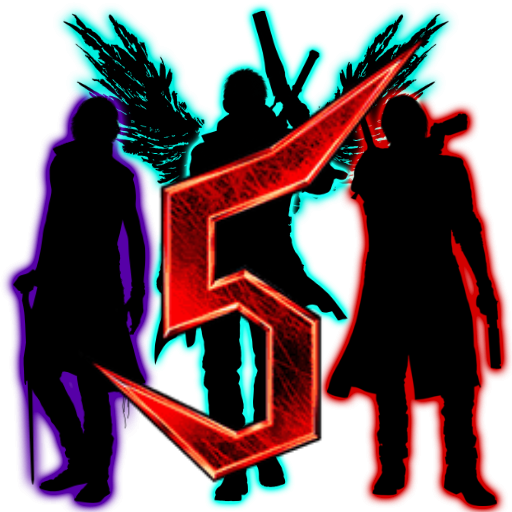

 Devil May Cry 5
Details
 |
|
| Playtime | 7h 38m 55s |
| Last Activity | 2/23/2022 21:51:01 |
| Added | 4/24/2025 6:00:16 |
| Modified | 4/29/2025 8:41:55 |
| Completion Status | Played |
| Library | PlayStation |
| Source | PlayStation |
| Platform | Sony PlayStation 5 |
| Release Date | 3/8/2019 |
| Community Score | 96 |
| Critic Score | 88 |
| User Score | |
| Genre | Action-adventure hack and slash |
| Developer | Capcom |
| Publisher | Capcom |
| Feature | Multiplayer Single Player |
| Links | Wikipedia Official website |
| Tag | [Game Engine] RE Engine [People] artist: Koki Kinoshita [People] composer: Hiromitsu Maeba [People] composer: Kota Suzuki [People] composer: Yoshiya Terayama [People] designer: Yoichiro Ikeda [People] director: Hideaki Itsuno [People] producer: Matt Walker [People] producer: Michiteru Okabe [People] producer: Peter Fabiano [People] producer: Tsuyoshi Kanda [People] programmer: Yoshiharu Nakao [People] writer: Bingo Morihashi |
Description
Devil May Cry 5 is a 2019 action-adventure game developed and published by Capcom. The game is the sixth installment overall and the fifth mainline installment in the Devil May Cry series. The plot follows returning protagonists Nero and Dante as they are hired by a mysterious stranger named V to stop the Demon King Urizen. Players control Nero, Dante and V, who each feature a different playstyle.
Devil May Cry 5 was directed by Hideaki Itsuno whose goal was for this installment to be his best work. He aimed to balance the game for newcomers and returning gamers by providing various difficulties and challenges. Capcom also wanted to bring a more realistic design inspired by the RE Engine used in their previous work, Resident Evil 7: Biohazard. As a result, real-life people were used to make the character's faces. The plot was written by returning writer Bingo Morihashi while the setting was based on various locations in London. Multiple composers worked together to produce the game's audio, creating three main themes centered around the playable characters.
Devil May Cry 5 was released for PlayStation 4, Windows, and Xbox One on 8 March 2019. The game received positive reviews from critics, who praised the gameplay, specifically the variety of techniques the three characters bring, as well as the handling of the narrative. It won several awards, and sold over two million units in less than two weeks after its release, which increased to 9.9 million units as of December 2024, making it the best-selling game in the franchise. A light novel and manga related to the game have also been released. An expanded version called Devil May Cry 5: Special Edition was released for Xbox Series X/S and PlayStation 5 in November 2020, featuring the addition of Vergil as a playable character. For players on PlayStation 4, Windows, and Xbox One, Vergil was released as paid downloadable content. An Amazon Luna port was released on 9 December 2021.
Gameplay
The gameplay features the return of Dante and Nero as playable characters, along with a new character, named V. The gameplay is similar to that of the other titles in the Devil May Cry series, focusing on fast-paced "stylish action"; the player fights off hordes of demons with a variety of attacks and weapons. They receive a style rating for combat based on several factors, such as move variety, the length of a combo, and dodging attacks. The game's music changes based on the player's performance in combat. Every time the player interacts with the mechanic Nico or finds a statue, they can buy new abilities for each character. While there are three playable characters, the game forces the player to use only one per mission. Like previous games, this title has a Bloody Palace mode where players can face multiple types of demons in a single area.
The first character is Nero, introduced in Devil May Cry 4. He retains his Red Queen sword for melee combat and the Blue Rose double-barreled revolver. However, he does not have his Devil Bringer from the beginning. Instead, he now has an assortment of new robotic arms called Devil Breakers. These have various functions, such as grabbing enemies from a distance or stopping time to freeze an enemy in place. Nero can also find Devil Breakers during stages. Devil Breakers are powerful but fragile and can be destroyed if misused. Late in the story, Nero regains his Devil Bringer and has access to the Devil Trigger move, which expands his combat skills.
Dante plays like his Devil May Cry 4 persona as he can change between four styles to create new techniques or parry enemy attacks. Along with his signature blade "Rebellion" and the Demonic "Devil Sword Sparda", Dante uses three new Devil Arms, a pair of buzzsaw-like weapons that combine into a motorcycle called "Cavaliere", and a set of fiery gauntlets and boots called "Balrog". Dante also wields "King Cerberus", a stronger version of the "Cerberus" nunchaku introduced in Devil May Cry 3. He also wears the "Dr. Faust", a hat that requires red orbs to attack; it is a risk/reward weapon depending on the player's actions. Dante can also use both "Kalina Ann" from Devil May Cry 3 and the new enhanced "Kalina Ann 2," or both at once. Besides the Devil Trigger that enhances Dante's abilities and restores his health, the character also possesses a more overpowered form named "Sin Devil Trigger" which produces new means of attacks.
The third playable character is V, who primarily summons his three demon familiars to fight. These include Griffon, an eagle that uses ranged lightning-based attacks; Shadow, a panther that forms blades, spikes, and portals out of its body; and Nightmare, a large and powerful golem. V enters a Devil Trigger-like state, which turns his hair white, to summon Nightmare, which uses a combination of melee attacks and explosive laser beams. V's familiars are incapable of killing enemies; once their health bar turns light purple, V uses his cane to finish them off with a final blow.
Vergil reappears as a playable character in the game's Special Edition, carrying over his playstyle from the fourth game's Special Edition, including the Concentration gauge system and weaponry. However, the Force Edge from previous Special Edition games is replaced with Mirage Edge, an ethereal sword that Vergil usually uses as a projectile summon. He has a new ability, which allows him to turn into V and gather his trio of demonic familiars to deal a wide range of damages to enemies. Instead of transforming into his regular Devil Trigger form, Vergil immediately transforms into his Sin Devil Trigger upgrade. His original Devil Trigger is now replaced with Doppelganger, a summoned spectral copy of his Sin Devil Trigger form which mirrors Vergil's attacks (with the Yamato only), which was a mechanic introduced in Devil May Cry 3 as Dante's Doppelganger Style, then reintroduced as the Devil Trigger ability for the reboot Vergil in DmC: Devil May Cry.
Plot
Following the events of Devil May Cry 4, Nero works as a demon hunter for Dante's Devil May Cry agency along with his friend, gunsmith Nico Goldstein. One afternoon, Nero is working at the agency when a hooded man enters. Nero offers the stranger food when he suddenly rips off his demonic Devil Bringer arm, which transforms into the Yamato sword. The stranger uses the sword to open a portal and departs.
Three days later, a mysterious man named V hires Dante and his crew to take down a powerful demon named Urizen. The group travels to Red Grave City, where they find a demonic tree called Qliphoth planted in the city, killing people for their blood. Nero, working on his own, is also pinpointed toward Urizen by V. Dante's crew confronts Urizen but, empowered by the Qliphoth, the new demon king incapacitates them and overpowers Nero when he intervenes. Dante stops Urizen from capturing Nero but is defeated and ejected from the Qliphoth with his sword Rebellion shattered. His allies Lady and Trish are captured to be used as demon-cores while V convinces the weakened Nero to escape.
One month later, Nero returns to Red Grave outfitted with the "Devil Breaker" prosthetic arm, made by Nico. Nero meets up with V, who is seeking Qliphoth for its fruit—born of condensed human blood—which makes whoever consumes it the king of the Underworld. As the pair destroy the Qliphoth's roots while searching for Dante, Nero rescues Lady while V splits off to discover the Devil Sword Sparda—along with a comatose Dante, whose presence was hidden by the sword.
After awakening from his coma, Dante frees Trish and begins fighting his way to Urizen. Trish learns from V that Urizen is the demon-side of Dante's brother Vergil, who used Yamato's power to separate his demon and human halves - the latter manifesting as V, whose body is rapidly breaking down. Realizing Yamato has the capability of separating humanity and the devil, Dante questions whether his Rebellion also has a hidden potential, believing both legacy weapons have incredible powers on their own. After stabbing himself with his broken Rebellion, Dante unlocks his full demonic power and a new weapon, the "Devil Sword Dante," by absorbing Rebellion and the Devil Sword Sparda into his body. Nero attempts to confront Urizen again and is overpowered once more, but Dante rescues him and gains the upper hand with his new powers. Urizen takes his leave when the Qliphoth bears fruit and consumes it to empower himself further. While Dante arrives first to face Urizen, Nero rescues V from the demon Malphas and learns of Dante's history with Vergil. Nero and V reach Dante just as he defeats Urizen, but a dying V intervenes and merges with Urizen before Dante can finish him, restoring Vergil.
Vergil returns to the top of the Qliphoth, telling Dante to recover his full strength before they battle again. Nero insists on going after Vergil himself, but Dante reveals that Vergil is Nero's father, and refuses to let Nero kill him. Dante then faces V's familiars—revealed as the embodied memories of Vergil's time as Nelo Angelo—and they elect to die by Dante's hand to lessen Vergil's trauma.
Dante and Vergil fight again, where Vergil learns Nero is his unintended son. Nero settles his emotions in a phone call to Kyrie and resolves not to let his father and uncle die, fully awakening his demonic powers and regrowing his arm. Intervening in their fight and forcing Dante out, Nero vows to end the pair's sibling rivalry and defeats Vergil, who gives Nero V's book as a memento. Vergil joins Dante in a one-way trip to the Underworld to cut the Qliphoth down and seal the portal connecting it before it rips Red Grave City apart and merges the Demon World with the Human World, with Nero departing as the Qliphoth falls.
Weeks later, Trish and Lady are hired for a new job by Dante's agent, Morrison, whom Dante left in charge of his office. In the Underworld, Dante and Vergil continue sparring as they fight demons together, now friendly rivals instead of enemies.
Development
In 2013, Hideaki Itsuno, director of the Devil May Cry games since the second game, showed an interest in continuing the original Devil May Cry series by developing a fifth installment. It was originally thought the series might go on hiatus or end for good if Devil May Cry 4: Special Edition was not a commercial success. However, in an interview with GameSpot, Itsuno confirmed this was not the case. He alleviated these fears by confirming that Capcom was ultimately satisfied with the final sales figures of Devil May Cry 4: Special Edition and DmC: Devil May Cry. In January 2016, Itsuno tweeted that he was working on a project well in development which could not yet be announced. In March, Reuben Langdon and Johnny Yong Bosch, who had done voice acting and motion capture for Dante and Nero respectively in Devil May Cry 4, took pictures of themselves in motion capture gear, leading to speculation that a new Devil May Cry game was in development. In a response on Twitter about these speculations, Capcom Vancouver stated: "It's not a game that we've announced that we're working on at this studio." On 17 May 2018, the domain name "DevilMayCry5.com" was registered by an unknown entity under Capcom's Onamae domain register. Devil May Cry 5 was confirmed at E3 2018 for a release the following year. Capcom confirmed a release date of March 2019 and a demo was playable in August 2018 at Gamescom. It was later made available on PlayStation Store and Xbox Live.
The game was originally planned to be announced in 2017. However, the idea to announce it along with the Resident Evil 2 remake led to a change. The game was being developed by Capcom Dev Studio 1 and many staff members worked on the Dragon's Dogma and the Devil May Cry series. The team aimed to make it the best action game from the Heisei period. A secret message was left in the first trailer for series' fans. The game was created by a studio from Osaka, Japan. It runs on the RE Engine, first used in Resident Evil 7: Biohazard. Most of the team had originally worked on the recently released Resident Evil 7 and were experienced with the engine. Itsuno stated that he played a lot of Monster Hunter World and was influenced by how the game welcomed new players. He also believed that creating a high skill ceiling would make the game appeal to long-time fans. Other members of the staff previously worked in the reboot game DmC: Devil May Cry, but the Osaka team was more willing to make a sequel to the fourth installment of the main series. The team listened to the fans' opinions of previous games to ensure the game appealed to them. An example is giving the players an "auto" mode that provides easier ways to produce combos.
Itsuno claims the original Devil May Cry 4 was unsuitable for consoles of its generation which resulted in certain issues with its design. As a result, he aimed to make this sequel far more enjoyable with a budget that would allow more content and thus appeal to a larger audience, including Devil May Cry 4 players. However, because the game's narrative was focused on Dante, Nero and V, Lady and Trish could not appear as playable characters again. The difficulty mode of "Son of Sparda" was retouched from a previous game to provide players with new challenges like the way characters have to parry enemy attacks and then be able to defeat them in one counterattack while also enhancing the boss fights such as Goliath's fight scene. Another of Itsuno's objectives was making more responsive controls to generate better productions while making the characters move like humans. A big influence on Itsuno and the game was a movie where three robots combined into one giant bot and overcame their foe, moving him to tears. He wanted to create similar moments. Itsuno also wanted to give players the style of a Hollywood movie, most notably Marvel's Avengers series.
Dante and Nero's respective actors, Reuben Langdon and Johnny Yong Bosch, have expressed pleasure with the game. Their characters were developed to play completely different in a similar fashion to Devil May Cry 4 as they employ different mechanics. Itsuno still felt that mastering Dante's skills would be more difficult as a result of the multiple mode and weaponry he executes. It features Cameo System, an online multiplayer mode for up to three players, that can be triggered depending on the mission being played. In April 2019, Capcom's Matt Walker claimed Vergil would not be a playable character in the game, leaving "a bitter taste" in fans mouths.
Scenario and cast
The story main's theme is "love" which is something Capcom aimed to introduce into Devil May Cry since the first installment. Itsuno explained the development team aimed for a "photo-realistic" graphics style. The game targets 60 frames per second on each release platform. The developers scanned various models to give the characters a realistic look, and actual clothes were created in London and scanned in Serbia. Using the RE Engine, the Capcom staff aimed for a more realistic story than previous games in the franchise rather than making it look like low-budget plot. The game's main location was modeled after London. The team made multiple research trips to generate better stages. Locations include Midhurst in West Sussex, Rochester, Kent, Canterbury and Leeds Castle in Kent. Art director Koki Kinoshita stated that thanks to the new technology provided by the engine, the character designs of the returning ones involved slight alterations to their Devil May Cry 4 appearances in order to fit their personalities. However, while Dante and Nero had few scrapped ideas, V underwent nearly twenty different appearances. The designs were also inspired by Carol Christian Poell as well as Daniel Craig and Benedict Cumberbatch.
Itsuno wanted to portray a villain who would not be taken lightly by either Dante or Nero. As a result, the staff found Vergil to be the best candidate for an interesting villain due the power he has developed in the series, and how he is related to the protagonists. The staff wanted to generate a major emotional scene when Vergil reappears in the climax confronting his brother. As a result, the brothers' feud is stopped by Nero who awakens his own demon powers to face his father. Nero's gameplay is designed to emphasize his anger over the way Dante treats him in the beginning. The game's climactic event, where Nero awakens his demonic powers and stops the struggle between Dante and Vergil, is meant to give the story a deeper form. The idea behind making Nero's new powers available near the game's ending is not only to give the title replay value, but to emphasize the power Nero needs to use to face Vergil. This contrasts with the beginning of the game when he can not defeat his alter-ego Urizen. His redesign for Devil May Cry 5 is intended to contrast with Dante's older look. Capcom used an older incarnation of Nero, so he would be "at the top of his game in body and mind". Because the game's graphics are meant to be as realistic as possible, each character is modeled after an actor.
According to the company, Dante "hasn't gone wild for no reason". In terms of his moves, Itsuno said he would be more like his Devil May Cry 3 persona. Nevertheless, he stated Dante has a more mature personality and still wishes to protect humanity and honor the legacy of his father, Sparda. The new antagonist, Urizen, was meant to remind players of the original Demon King from the 2001 Devil May Cry game. Itsuno said, "Urizen is definitely the strongest enemy of the entire Devil May Cry saga ... the most powerful. You've seen it: every time he appears, he sits on his throne and, maybe sometimes, he moves a little, but that's it. We want to make people understand how a fight against him can be completely crazy."
Newcomer V was created to be the exact opposite of Nero and Dante. He does not wield weapons, giving him a sense of mystery. Itsuno was pleased he was well-received as a character by fans, despite his traits which he felt would make him divisive. Nico was created to be a contrasting heroine to Nero's girlfriend, Kyrie; Nico is more used to fighting. In developing Nero's Devil Breaker abilities, Itsuno pointed out that Punch Line, which involves Nero shooting his mechanical arm, was made to attract teenagers.
During localization, Langdon did not like reading the script. Although he enjoyed the story and characters, Langdon claims the dialogue was "horrible," and they had to rewrite some parts. Translator Mike NcNamara reworked the original dialogue much to Langdon's liking alongside Itsuno's. Langdon worked with Daniel Southworth and Bosch to improve the English translation of the dialogue, which they enjoyed. Dante performs a parody of one of Michael Jackson's themes that the staff knew Langdon could not perform in motion capture during one scene. As a result, this scene was performed by a stunt double known as Shibata. The voiceover had to be redone during the making of the game. Although Devil May Cry 5 is a sequel, Bosch did three auditions to reprise his roles due to the considerable time the game took to be made.
Kota Suzuki, Yoshiya Terayama, Hiromitsu Maeba, Steven McNair, John R. Graham, Casey Edwards, Cody Matthew Johnson and Jeff Rona composed the game's soundtrack. Johnson and Rona had worked together on multiple projects before Devil May Cry 5 including the fighting game Marvel vs. Capcom: Infinite where both worked on a remix of Dante's theme "Devils Never Cry". Their work's success led the duo to be chosen to work on Devil May Cry 5. While not a composer, Johnson played the games, so he knew the series. Edwards has been a fan of the series since the original 2001 game. He took a liking to Nero's theme from Devil May Cry 4 which attracted him mostly because of the lyric "I'll endure the exile." According to Johnson, the general idea for the music was "grittier, heavier, and more experimental." The fact the game uses three characters allowed them to use different types of music. Sony Japan released the game's original soundtrack in Japan on 12 April 2019 on five discs.
Nero's battle themes are "Devil Trigger" and its final boss remix, "Silver Bullet," both performed by Ali Edwards. "Devil Trigger" was released on 11 June 2018 as a soundtrack single to promote the game. Edwards was given multiple images of Nero facing his enemies to give him an idea of how his theme song should sound. Edwards met Bosch, who gave him a better understanding of the character. This included his young and reckless traits despite being older when he is introduced. The massive positive response to "Devil Trigger" surprised Edwards. On Spotify, the song has over 7 million streams. It currently has over 68 million views on YouTube. "Devil Trigger" was also the first song revealed to the audience because older members of the staff enjoyed the composers' work on that track. The theme "Silver Bullet" used for Nero's final fight with Vergil was considered a "risk" by the composer. It served as an homage to the original Devil May Cry final boss theme and served as a remix of "Devil Trigger." He faced the challenge of putting a more emotional theme than "Devil Trigger" in this remix and was grateful to the Capcom staff for assisting him in making this theme.
In September 2018, Dante's battle theme "Subhuman," composed by Johnson and performed by Suicide Silence, was released. It was originally sung by the band's lead vocalist Eddie Hermida, but following sexual misconduct allegations against him, he was replaced by then-former Volumes vocalist Michael Barr. The idea for this theme was to explore the dark and goofy sides of Dante's personality through the instruments being played. The staff was careful the song accurately reflected the character.
In December 2018, new franchise character V's original battle theme, "Crimson Cloud," composed by Rona, was released. Because V's real identity was not revealed until later in the story, the composers avoided giving him themes related to his origins. The final trailer presented the game's ending theme "Legacy," composed by Kota Suzuki and sung by Ali Edwards. Edwards worked as both vocalist and lyricist. A theme of this song is "family" as well as the idea of people supporting each other. The Japanese version of the game includes the song "Mad Qualia" by Hyde.
Release
Devil May Cry 5 was released for PlayStation 4, Windows, and Xbox One on 8 March 2019. Players who purchased the deluxe edition of the game had access to several pieces of additional content. These included the Cavaliere R weapon for Dante, new cutscenes and announcer options, battle music from the first four Devil May Cry titles, and four Devil Breaker weapons for Nero, including a Mega Buster based on Mega Man 11. They were available for purchase separately as downloadable content within weeks of the game's release. A wave-based survival mode, Bloody Palace, was released as a free update on 1 April 2019. In Japan, there were three limited releases of the game which included a replica of either Dante, Nero, or V's jacket. An Amazon Luna version of the game was announced and released during the 2021 Game Awards.
Bingo Morihashi, the game's writer, wrote a prequel novel that leads up to the beginning of the game's story. Titled Devil May Cry 5: Before the Nightmare, it was released in Japan on 1 March 2019, one week before the game's release. A spin-off manga centered around V was also released. Titled Devil May Cry 5: Visions of V, it was written by Tomio Ogata and serialized on Line Manga from 7 March 2019 to 19 March 2022. Its 50 chapters were collected into five physical tankōbon volumes, with the first volume released on 15 November 2019, and the final volume released on 15 July 2022.
Special Edition
During the September 2020 PlayStation 5 showcase, Capcom announced an expanded version called Devil May Cry 5: Special Edition. It was released as a digital-only launch title for the Xbox Series X/S and PlayStation 5 in November 2020. A physical version was released the following month. Owing to the more powerful hardware, it features improved visuals and gameplay at up to 120 frames per second. Alongside all previously-released downloadable content, other additions include Vergil as a playable character, ray tracing graphics options, and two additional game modes; Legendary Dark Knight mode, which significantly increases the number of enemies in each level; and Turbo mode, which increases the game speed by 20%. Turbo mode was previously included in Devil May Cry 3: Special Edition and Devil May Cry 4: Special Edition. Players who own the original version of Devil May Cry 5 can also purchase Vergil separately as downloadable content.
Including Vergil as a playable character was something the team wanted to do ever since the Special Edition was conceived. Vergil's new battle theme, titled "Bury the Light", was composed by Casey Edwards with vocals performed by Victor Borba. Edwards stated that the song was meant to be a reflection of Nero's battle theme, "Devil Trigger", as he saw Nero as a reflection of Vergil. According to Edwards, "Nero chose to 'embrace the darkness' within and accept his demon side. Vergil has always tried to bury his humanity as it is a great source of personal pain and memory of weakness".
Reception
Pre-release
Following 2018's Tokyo Game Show, Devil May Cry 5 won the Future Division award from the Japan Game Awards. Some concern arose in the gaming community regarding the decision to include optional in-game purchases where the player can purchase red orbs used to upgrade characters. Capcom confirmed this in no way alters the game's designed progression system, and it is similar to that of Devil May Cry 4: Special Edition, which also allowed for similar in-game purchases.
Devil May Cry 5 received "generally favorable" reviews from critics, according to review aggregator website Metacritic. The gameplay and characters were praised. PC Gamer UK referred to it as "one of the best games about hitting demons ever made". The reviewer enjoyed the characters' fightstyles and how performing different techniques rewards the player for their originality in combat. USgamer found it one of the series' strongest installments. They noted that while the reboot by Ninja Theory was enjoyable, Devil May Cry 5 remained true to the series' core when it came to gameplay mechanics and the handling of the characters. VideoGamer.com praised its gameplay and world building style—particularly its handling of the setting based on London. Similarly, The Guardian gave it a perfect score. The reviewer liked how newcomers can easily learn how to score the stylish system in a short time, noting they must also understand the enemies' tactics to beat them and the bosses. GameSpot appreciated the depth Capcom offered players, most notably the change in Nero's gameplay to allow different styles of Devil Breaker techniques. Destructoid enjoyed the multiple types of enemies and boss fights and noted Capcom had responded to criticism of Devil May Cry 4 by providing the player with more stages.
Several critics focused on the increased number of moves available to the three protagonists. The Daily Telegraph praised the characters' mechanics, most notably V's, for how differently he plays compared to Nero and Dante while still entertaining. GamesRadar enjoyed the great variety each of the three playable characters possess in combat while retaining their own style—this, despite Dante playing similarly to his Devil May Cry 4 persona. GameSpot noted how engaging Nero is to newcomers thanks to his gameplay. They also felt the techniques V presents and how differently he plays from Dante and Nero is impressive. IGN liked Nero's new techniques provided by his mechanical arms—most notably the one he shoots to attack enemies. While IGN felt Dante was similar to his presentation in previous games, they noted the new weapons he presents were much more enjoyable. V was also well-received for his interactions with the demons he commands to fight enemies. Due to some difficulties in handling Nero's Devil Breakers mechanics, Destructoid felt that Dante and V were the most polished characters to play. Despite enjoying the gameplay, the swapping between characters who need to earn new powers was criticized by Game Informer.
The game's narrative and the concept was also the subject of praise by IGN for its characters and elements of the story, despite the reviewer not finding it very entertaining overall. IGN's Mitchell Saltzman said "its mysterious story keeps things interesting along the way." GameSpot praised the storyline for concluding the crisis the protagonists have across the game, praising their character arcs even though they are not deep. The Guardian liked the plot despite finding it simple and noted it took elements from the reboot that were also well received. Dante's characterization as older than in previous games while retaining his juvenile personality was also praised by The Guardian. PCGamer enjoyed the story for the portrayal of its characters. The reviewer felt let down by some cutscenes and was critical of Nico. While liking how integral the narrative became in the gameplay mechanics, GamesRadar felt newcomers might not understand the game's full plot and that the ending was rushed. VideoGamer.com was more critical of the plot, believing the narrative and villain were "dull" despite some interesting interactions in the storyline.
At its launch, the PlayStation 4 version of the game released in western countries included the use of a lens flare which reduced the visibility of brief nudity. Several gaming journalists referred to it as an act of censorship and reported the change came about as part of a patch for the game. IGN also noted that another character was similarly censored in all western versions regardless of the platform. In April 2019, Push Square reported the lens flare had been removed in the game's North American version, yet remained in Europe.
In Japan, Devil May Cry 5 sold approximately 116,202 physical units, or 75.75% of its initial shipment for the PS4, were sold during its launch week making it the number one selling game of any format, While selling fewer units than the debut of Devil May Cry 4, it still surpassed the reboot DmC. In the United Kingdom, the game debuted atop the all-format sales chart selling 20,872 physical units, becoming Capcom's second number-one in the country in 2019 following Resident Evil 2. At the 2019 Game Developers Conference, Itsuno revealed the game had sold over two million units, reaching the figure within two weeks of its release. As of September 2019, the game had sold over 2.7 million units worldwide. By September 2020, 3.9 million units had been sold, making it the best-selling title in the series. By April 2022, 5 million units had been sold, not including the Special Edition version. As of 19 October 2022, 6 million units had been sold. By January 2023, the game had sold 6.5 million units. By December 2024, the original release of the game had sold 8.9 million units, while the Special Edition had sold an additional one million, bringing total sales to 9.9 million units.